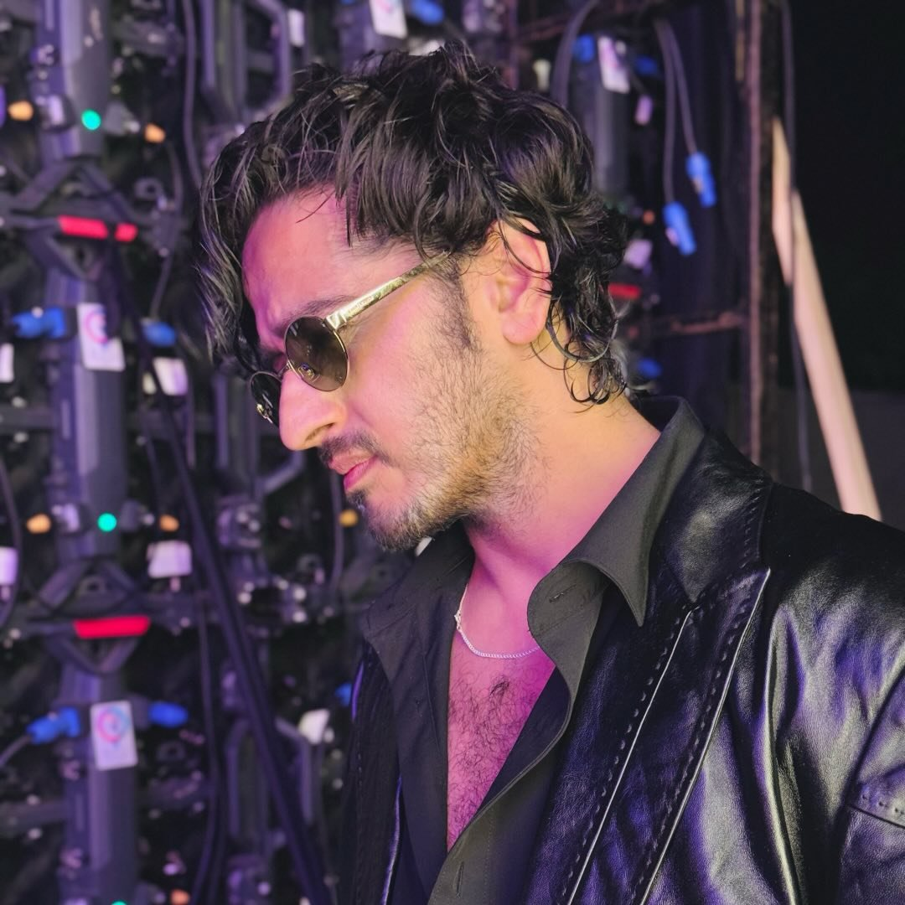

01 — 2005
THE BREAKTHROUGH
Fame Gurukul
A young performer from Kashmir became a household name, winning Fame Gurukul alongside Ruprekha Banerjee. The audience saw something in him—and made their voices count.
THE WORLD LEARNS HIS NAME ↗✳

QAZI TOUQEER. FEEL THE ENERGY ↗THE ONE. THE ONLY. THE ORIGINAL.
Big energy. Bigger heart. Zero chance of being boring.

Plot twist:
Some people enter a room. Qazi enters with a soundtrack.
From Srinagar to the national spotlight, Qazi Touqeer built his name on fearless energy, a memorable presence, and the kind of personality that refuses to sit quietly in the background.
This page celebrates the journey—not a perfect, polished fairytale, but a real ride of ambition, detours, laughter, work, and finding your way back to the spotlight.
Different stages. Different lessons.
Same unmistakable Qazi energy.
THE BREAKTHROUGH
A young performer from Kashmir became a household name, winning Fame Gurukul alongside Ruprekha Banerjee. The audience saw something in him—and made their voices count.
THE WORLD LEARNS HIS NAME ↗THE WORK CONTINUES
Live shows, music, acting ambitions, and new directions. The road after a big win is rarely straight; the work keeps happening even when the cameras move on.
KEEP SHOWING UP ↗A POP-CULTURE MOMENT
Qazi appeared in the music video for Afghan Jalebi from Phantom—another memorable chapter in a journey that moved across music, screen, and performance.
ANOTHER FRAME IN THE STORY ↗THE RETURN TO THE CHAT
With Bigg Boss 20, a new audience gets to meet the entertainer: expressive, unpredictable, funny, and completely comfortable being himself.
THE STORY IS STILL LIVE ↗THE QAZI PHILOSOPHY (UNOFFICIAL, BUT THE VIBE IS REAL)
“Why be ordinary
when you can be unforgettable?”
A little drama. A lot of heart. Always a story to tell.
The stage is a feeling. The mic is just the accessory.
TURN IT UP ↗Comedy, reactions, dramatic entrances—he knows a moment is better when you own it.
MAKE THEM LAUGH ↗Roots matter. The story starts in Srinagar, with a life shaped by home and ambition.
ROOTED, NOT STUCK ↗The journey has highs, quiet stretches, and fresh starts. The point is to keep showing up.
NEXT CHAPTER, PLEASE ↗From the early spotlight to the new chapter—every era brings its own look.

“I am a rockstar, baby!”
CONFIDENCE: MAXIMUMPhoto note: Images are linked from published editorial coverage. Replace these image URLs with licensed or official photos for a public launch.
THIS IS NOT THE END CREDITS
Here’s to the detours, the comebacks, the big laughs, and the next chapter nobody saw coming.